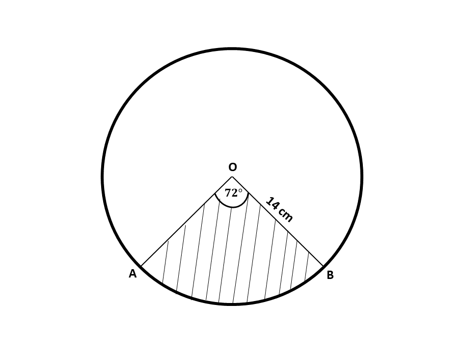
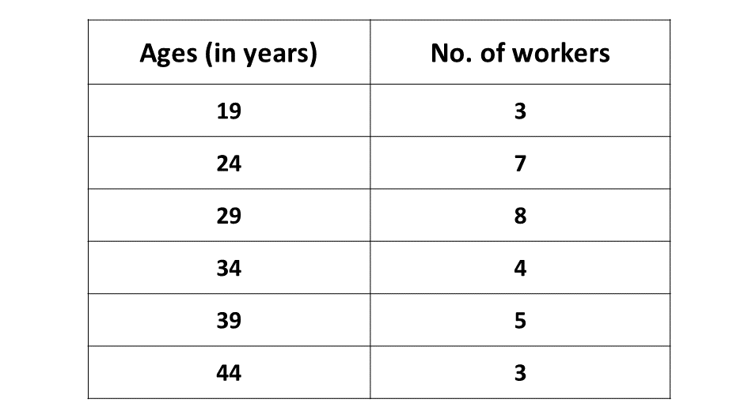

BECE
Year to Practice:
1990
1991
1992
1993
1994
1995
1996
1997
1998
1999
2000
2001
2002A
2002B
2003
2004
2005
2006
2007
2008
2009
2010
2011
2012
2013
2014
2015
2016
2017
2018
2019
2020
2021
2022
2023
2024
PAST QUESTIONS 1995
Time yourself to improve on your speed. You are to use not more than 60 minutes for this section.
Click on the link below when you are ready.
Kindly contact the administrator on WhatsApp or Phone (0208711375) for the link to the test.
Try the questions first, using not more than 15 minutes for each question, and watch the accompanying videos to see how the questions are solved.
Question 1
-
There are 20 students in a hostel, 16 of them are fluent in French and 10 of them are fluent in English. Each student is fluent in at least one of the languages.
\((i)\) Illustrate the information on a Venn diagram.
\((ii)\) How many students are fluent in both English and French?
-
The sum of ages of two brothers Kofi and Kweku is 35. Kofi's age is two-thirds Kweku's age. Find their ages.
Solution
Solution
Let Kweku's age \(= x\)
\(\therefore\) Kofi's age \(\Rightarrow \frac{2}{3}\) of \(x\)
\(\hspace{1.7cm} \Rightarrow \frac{2}{3}\)\(x\)
Sum of their ages:
\(\Rightarrow x + \frac{2}{3}x = 35\)
Multiplying through by the L.C.M of 3
\(\Rightarrow 3x + 3(\frac{2}{3}x) = 3 \times 35\)
\(\Rightarrow 3x + 2x = 105\)
\(\Rightarrow 5x = 105\)
\(\Rightarrow \frac{5x}{5} = \frac{105}{5}\)
\(\Rightarrow x = 21\)
\(\therefore\) Kweku is \(21\) years old
Kofi's age \(\Rightarrow \frac{2}{3}x \)
\(\Rightarrow \frac{2}{3} \times 21 \)
\(\Rightarrow 2 \times 7\)
\(\Rightarrow 14\)
\(\therefore\) Kofi is \(14\) years old
Question 2
-
Using a ruler and a pair of compasses only,
\((i)\) Construct a triangle \(ABC\) such that \(|AB| = 9\) cm, angle \(BAC = 60^\circ\) and angle \(ABC = 45^\circ\).
\((ii)\) Construct a line from the point \(C\) perpendicular to \(AB\) and let it meet \(AB\) at \(P\). Measure \(|CP|\) and \(|AP|\).
-
What is the value of angle \(ACP\)?
Solution
Question 3
-
Mansah earns a salary of ₵10,000.00 per month as a sales girl. In addition to the salary, she is given a commission of 1.5% of whatever sales she makes in a month. In January, this year, she made sales of ₵7,500,000.00. What is the total amount Mansah earned at the end of January?
-
The diagram below shows a circle with center O and radius 14cm.
The shaded region \(AOB\) is a sector with angle \(AOB = 72^\circ\). Find
\((i)\) the length of the minor arc \(AB\)
\((ii)\) the area of the shaded sector \(AOB\)
[Take \(\pi = \frac{22}{7}\)]
Solution
Solution
Question 4
-
Using a scale of 2 cm to 1 unit on both axes, draw two perpendicular axes, \(Ox\) and \(Oy\) on a graph sheet.
-
On the sane graph sheet, mark the \(x-\)axis from \(-5\) to \(5\) and the \(y-\)axis from \(-6\) to \(6\).
-
\((i)\) Plot on the same graph sheet the points \(A(1, 1\frac{1}{2})\), \(B(4, 1\frac{1}{2})\), \(C(1, 4)\).
\((ii)\) Join the points to form a triangle. What type of triangle have you drawn?
-
Draw the image \(A_1B_1C_1\) of \(ABC\) under a reflection in the \(y-\)axis where \(A \rightarrow A_1\), \(B \rightarrow B_1\) and \(C \rightarrow C_1\). Label the vertices and coordinates clearly.
-
Draw the image \(A_2B_2C_2\) of \(ABC\) under an enlargement with scale factor \(-1\) with the center of the enlargement as the origin \(0, 0\) where \(A \rightarrow A_2\), \(B \rightarrow B_2\) and \(C \rightarrow C_2\). Show the lines of enlargement and lavel the vertices and coordinates clearly.
-
What single transformation maps \(A_1B_1C_1\) onto \(A_2B_2C_2\), where \(A_1 \rightarrow A_2\), \(B_1 \rightarrow B_2\) and \(C_1 \rightarrow C_2\)
Solution
Question 5
-
The data below show the distribution of the ages of workers in a factory.
\((i)\) How many workers are there in the factory?
\((ii)\) What is the modal age of the distribution?
\((iii)\) Calculate the mean age of the workers, correct to one decimal place.
-
\((i)\) Make \(T\) the subject of the relation \(I = \frac{P \times R \times T}{100}\)
\((ii)\) If \(I = ₵40,000.00, P = ₵64,000.00\) and \(R = 25\%\), find the value of \(T\) in years.
Solution
Solution
To advertise on our website kindly call on 0208711375 or 0249969740.